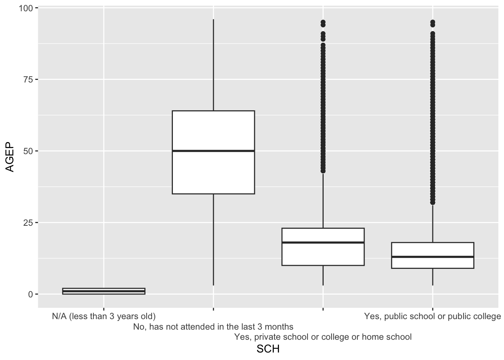

cens_tibble <- function(rawdata) {
raw<-httr::GET(rawdata)
parsed<-fromJSON(rawToChar(raw$content))
matrix_data<-parsed[-1,]
colnames(matrix_data)<-parsed[1,]
pums_tib <- as_tibble(matrix_data)
class(pums_tib) <- c("census",class(pums_tib))
return(pums_tib)
}ST 558 Project 1
Introduction
In this project, we’ll be creating functions to retrieve data from the US Census Public Use Microdata Sample (PUMS), manipulate that data into a tidy tibble, and then perform a few basic summary analyses.
Retrieving and Processing Data from the PUMS Census API
First, we’ll create a helper function that will process the raw data retrieved from the API into a tibble. This function also adds a new class called census for this tibble, and we will use this class for summarizing the data later.
Get PUMS data from Census API for a single year
We created an additional helper function to allow us to format any character variables we retrieve from the API. The character variables have a numeric value that corresponds to a character string. This helper function changes the numeric values into the corresponding character string for each character variable.
frmt_char_var<-function(y='all'){
first_url<-"https://api.census.gov/data/2022/acs/acs1/pums/variables/"
end_url<-".json"
var<-y
cmplt_url<-paste0(first_url,var,end_url)
t <- httr::GET(cmplt_url)
t_list <- t$content |> rawToChar() |>jsonlite::fromJSON()
var_list <- t_list$values$item
x<-as_tibble(var_list)
x2<-pivot_longer(x,cols = 1:ncol(x))
}This is our main function for getting PUMS data from the Census API. The function builds a URL based on the year given, the numeric variables given, the character variables given, and the optional geography given. The data is organized as a tibble using our first helper function, cens_tibble. The function then formats the variables, numeric when appropriate, time when appropriate, and using the second helper function, frmt_char_var, when appropriate.
The function requires a year, a numeric varaible, and a character variable to run. The function has no defualt year, but the function will return PWGTP always unless otherwise specified. AGEP is the defualt numeric variable, and SEX is the default character variable. A user can call as many of the optional variables as they would like.
The default geography is set to state with the state code of 6. The geography can be changed to division, region, or all. Like state, division and region can have codes specified, but it is not required and all will be returned if left unspecified.
get_PUMS_API<-function(yr, AGEP=TRUE, GASP=FALSE, GRPIP=FALSE, JWAP=FALSE ,JWDP=FALSE,
JWMNP=FALSE ,FER=FALSE ,HHL=FALSE, HISPEED=FALSE, JWTRNS=FALSE,
SCH=FALSE, SCHL=FALSE, SEX=TRUE, geography='state', geo_code=06)
{
base_url<-"https://api.census.gov/data/"
if(yr>=2010 & yr<=2022){
year_url<-paste(yr,'/',sep='')
}else{stop()
}
middle_base_url<-"acs/acs1/pums?"
get_start_url<-"get="
vec<-'PWGTP'
if (AGEP) {
vec <- c(vec,'AGEP')
}
if (GASP) {
vec <- c(vec,'GASP')
}
if (SEX){
vec<-c(vec,'SEX')
}
if (GRPIP){
vec<-c(vec,'GRPIP')
}
if (JWAP){
vec<-c(vec,'JWAP')
}
if (JWDP){
vec<-c(vec,'JWDP')
}
if (JWMNP){
vec<-c(vec,'JWMNP')
}
if (FER){
vec<-c(vec,'FER')
}
if (HHL){
vec<-c(vec,'HHL')
}
if (HISPEED){
vec<-c(vec,'HISPEED')
}
if (SCH){
vec<-c(vec,'SCH')
}
if (SCHL){
vec<-c(vec,'SCHL')
}
if (JWTRNS){
vec<-c(vec,'JWTRNS')
}
if ("AGEP" %in% vec | "GASP" %in% vec| "GRPIP" %in% vec| "JWAP" %in% vec| "JWDP" %in% vec| "JWMNP" %in% vec) {
vec<-vec
} else {
stop()
}
if ("SEX" %in% vec | "FER" %in% vec| "HHL" %in% vec| "HISPEED" %in% vec| "JWTRNS" %in% vec| "SCH" %in% vec| "SCHL" %in% vec) {
vec<-vec
} else {
stop()
}
vars_url<-paste0(vec[-2],collapse = ',')
get_end_url<-paste('&',vec[2],sep='')
for_url<-"&for="
if (geography =='division') {
geo<-'division'
}
if (geography =='region') {
geo<-'region'
}
if (geography =='state') {
geo<-'state'
}
if (geography =='all') {
geo_url<-''
for_url<-''
}
if(geo_code==''){
geo_url<-paste(geo,'*',sep=':')
}
else{
geo_url<-paste(geo,geo_code,sep=':')
}
url_pums<-paste0(base_url, year_url, middle_base_url, get_start_url, vars_url,
get_end_url,for_url,geo_url)
final<-cens_tibble(url_pums)
final$PWGTP<-as.numeric(final$PWGTP)
if(AGEP){
final$AGEP<-as.numeric(final$AGEP)
}
if(GASP){
final$GASP<-as.numeric(final$GASP)
}
if(GRPIP){
final$GRPIP<-as.numeric(final$GRPIP)
}
if(JWMNP){
final$JWMNP<-as.numeric(final$JWMNP)
}
if (JWAP){
temp <- httr::GET("https://api.census.gov/data/2022/acs/acs1/pums/variables/JWAP.json")
temp_list <- temp$content |>
rawToChar() |>
jsonlite::fromJSON()
JWAP <- temp_list$values$item
JWAP_values <- JWAP[sort(names(JWAP))]
x<-as_tibble(JWAP_values)
x2<-pivot_longer(x[,-1],cols = 1:285) |>
separate_wider_delim(cols=value,delim='to', names = c('start','end'))|>
mutate(ap=ifelse(grepl('a',start),'a.m.','p.m.'))|>
mutate(start=str_remove_all(start,"[apm.]"),end=str_remove_all(end,"[apm.]"))|>
separate_wider_delim(cols=start,delim=':', names = c('hour','min'))|>
separate_wider_delim(cols=end,delim=':', names = c('hour2','min2'))|>
mutate(mid=(as.numeric(min2)+as.numeric(min))/2)|>
mutate(mid=as.character(format(round(as.numeric(mid),2))))|>
separate_wider_delim(cols=mid,delim='.', names = c('minn','sec'))|>
unite(col='timez',hour,minn,sec,sep=":")|>
mutate(timez=hms::parse_hms(timez))|>
unite(col=time,timez,ap,sep=' ')|>
select(name,time)
final<-left_join(final,x2,by=join_by(JWAP==name))|>
select(-JWAP)|>
mutate(time=ifelse(is.na(time),'N/A (not a worker; worker who worked from home)',
time))|>
rename("JWAP"="time")
}
if (JWDP){
temp <- httr::GET("https://api.census.gov/data/2022/acs/acs1/pums/variables/JWDP.json")
temp_list <- temp$content |>
rawToChar() |>
jsonlite::fromJSON()
JWDP <- temp_list$values$item
JWDP_values <- JWDP[sort(names(JWDP))]
x<-as_tibble(JWDP_values)
x2<-pivot_longer(x[,-1],cols = 1:150) |>
separate_wider_delim(cols=value,delim='to', names = c('start','end'))|>
mutate(ap=ifelse(grepl('a',start),'a.m.','p.m.'))|>
mutate(start=str_remove_all(start,"[apm.]"),end=str_remove_all(end,"[apm.]"))|>
separate_wider_delim(cols=start,delim=':', names = c('hour','min'))|>
separate_wider_delim(cols=end,delim=':', names = c('hour2','min2'))|>
mutate(mid=(as.numeric(min2)+as.numeric(min))/2)|>
mutate(mid=as.character(format(round(as.numeric(mid),2))))|>
separate_wider_delim(cols=mid,delim='.', names = c('minn','sec'))|>
unite(col='timez',hour,minn,sec,sep=":")|>
mutate(timez=hms::parse_hms(timez))|>
unite(col=time,timez,ap,sep=' ')|>
select(name,time)
final<-left_join(final,x2,by=join_by(JWDP==name))|>
select(-JWDP)|>
mutate(time=ifelse(is.na(time),'N/A (not a worker; worker who worked from home)',
time))|>
rename("JWDP"="time")
}
if(FER){
fmt_FER<-frmt_char_var('FER')
final<-left_join(final,fmt_FER,by=join_by(FER==name))|>
select(-FER)|>
rename("FER"="value")
}
if(HHL){
fmt_HHL<-frmt_char_var('HHL')
final<-left_join(final,fmt_HHL,by=join_by(HHL==name))|>
select(-HHL)|>
rename("HHL"="value")
}
if(HISPEED){
fmt_HISPEED<-frmt_char_var('HISPEED')
final<-left_join(final,fmt_HISPEED,by=join_by(HISPEED==name))|>
select(-HISPEED)|>
rename("HISPEED"="value")
}
if(JWTRNS){
fmt_JWTRNS<-frmt_char_var('JWTRNS')
final<-left_join(final,fmt_JWTRNS,by=join_by(JWTRNS==name))|>
select(-JWTRNS)|>
rename("JWTRNS"="value")
}
if(SCH){
fmt_SCH<-frmt_char_var('SCH')
final<-left_join(final,fmt_SCH,by=join_by(SCH==name))|>
select(-SCH)|>
rename("SCH"="value")
}
if(SCHL){
fmt_SCHL<-frmt_char_var('SCHL')
final<-left_join(final,fmt_SCHL,by=join_by(SCHL==name))|>
select(-SCHL)|>
rename("SCHL"="value")
}
if(SEX){
fmt_SEX<-frmt_char_var('SEX')
final<-left_join(final,fmt_SEX,by=join_by(SEX==name))|>
select(-SEX)|>
rename("SEX"="value")
}
return(final)
}Suppose a user wants to obtain multiple years of data for a given set of variables. The following function will call the query for a list of years specified as a vector of numeric values. Because there is no PUMS data available for 2020, this function will also skip that year if a user includes it in the list.
pums_years <- function(yr_list,AGEP=TRUE,GASP=FALSE,GRPIP=FALSE, JWAP=FALSE ,JWDP=FALSE,
JWMNP=FALSE ,FER=FALSE ,HHL=FALSE, HISPEED=FALSE, JWTRNS=FALSE,
SCH=FALSE, SCHL=FALSE, SEX=TRUE, geography='state', geo_code=06) {
yr_len <- length(yr_list)
for(i in 1:yr_len){
yr_i <- yr_list[i]
# Check to see if 2020 was included and skip if necessary
if (yr_i == 2020) {
print("Skipping 2020 - not available")
next
}
# Get data for the specified year and append a year variable
yr_tib <- get_PUMS_API(yr=yr_i,AGEP,GASP,GRPIP, JWAP ,JWDP,
JWMNP ,FER ,HHL, HISPEED, JWTRNS,
SCH, SCHL, SEX,geography,geo_code) |> mutate(year=yr_i)
# Start or append the cumulative results tibble
if (i == 1) {
pums_combined <- yr_tib
} else {
pums_combined <- bind_rows(pums_combined,yr_tib)
}
}
return(pums_combined)
}Exploring the PUMS Data
Summary statistics
We previously created a class called census for tibbles generated from PUMS data queries. Now, we’ll create a custom summary function for tibbles of this class to produce means and standard deviations for selected numeric variables and frequency tables for specified categorical variables.
The variables to be analyzed will be passed to the summary function as a vector of variable names. If no variables for a given type (numeric or character) are specified, then all variables of that type will be summarized by default.
summary.census <- function(cens_tibble,num_vars,cat_vars){
# Summarize numeric variables
# Extract the weights
weight <- cens_tibble$PWGTP
# Check to see if a list of numeric variables has been specified.
# If not, include all numeric variables except for PWGTP and year
if (missing(num_vars)) {
num_vars <- names(cens_tibble |> select(where(is.numeric) & !PWGTP))
}
# Subset the tibble to include the numeric variables
num_tibble <- cens_tibble |> select(all_of(num_vars))
mean_t <- colSums(num_tibble*weight)/sum(weight)
sd_t <- sqrt(colSums((num_tibble ^ 2) * weight)/sum(weight) - mean_t^2)
#Summarize categorical variables
# Check to see if a list of categorical variables has been specified.
# If not, include all numeric variables except for PWGTP and year
if (missing(cat_vars)) {
cat_vars <- names(cens_tibble |> select(where(is.character)))
}
# Subset the tibble to include only the categorical variables
cat_tibble <- cens_tibble |> select(any_of(cat_vars),PWGTP)
# Generate weighted counts for each variable
count_t <- vector(mode="list")
for (i in 1:length(cat_vars)) {
count_t[[i]] <- cat_tibble |> group_by(cat_tibble[ ,i]) |> summarize(weighted_count=sum(PWGTP))
}
final <- as.list(c(mean=mean_t,sd=sd_t,count=count_t))
return(final)
}Creating box plots
Finally, we create a function that allows us to generate a box plot for a specified numeric variable, grouped by the levels of a specified categorical variable:
plot.census <- function(cens_tibble,num_var,cat_var) {
ggplot(cens_tibble,aes(x=get(cat_var), y=get(num_var), weight=PWGTP)) + geom_boxplot() + xlab(cat_var) + ylab(num_var) + scale_x_discrete(guide = guide_axis(n.dodge=3))
}Testing our functions
Let’s say we wanted to explore age and school enrollment, just for the year 2019, in the Northeast region (geo_code = 01). We’ll call our API function, get_PUMS_API, for the year 2019 and specify that the variable for school enrollment (SCH) should be included and that the default variable SEX should be excluded:
our_PUMS_data_1<-get_PUMS_API(yr=2019, SCH=TRUE, SEX=FALSE, geography = 'region',geo_code = 01)
our_PUMS_data_1# A tibble: 566,977 × 4
PWGTP AGEP region SCH
<dbl> <dbl> <chr> <chr>
1 10 85 1 No, has not attended in the last 3 months
2 11 16 1 Yes, public school or public college
3 33 71 1 No, has not attended in the last 3 months
4 80 19 1 Yes, private school or college or home school
5 37 83 1 No, has not attended in the last 3 months
6 77 60 1 No, has not attended in the last 3 months
7 78 18 1 Yes, public school or public college
8 71 79 1 No, has not attended in the last 3 months
9 17 20 1 Yes, public school or public college
10 73 20 1 Yes, public school or public college
# ℹ 566,967 more rowsWe can now calculate summary statistics for age and school enrollment for 2019:
sum_2019 <- summary.census(cens_tibble=our_PUMS_data_1,num_var="AGEP",cat_var="SCH")
sum_2019$mean.AGEP
[1] 40.35198
$sd.AGEP
[1] 23.34157
$count
# A tibble: 4 × 2
SCH weighted_count
<chr> <dbl>
1 N/A (less than 3 years old) 1782558
2 No, has not attended in the last 3 months 40976184
3 Yes, private school or college or home school 3054135
4 Yes, public school or public college 10169926The results show that the mean age is about 40.4 years, with a standard deviation of 23.3 years. We can then create a box plot for age, grouped by level of school enrollment. We also see that most people have not attended school in the last 3 months. Next, let’s look at the distribution of ages by school enrollment status:
plot.census(cens_tibble=our_PUMS_data_1,num_var="AGEP",cat_var="SCH")
The box plot indicates, not surprisingly, that the median age of those who have not been enrolled in school for the past 3 months is around 50 years, while those who have been enrolled in school have a median age of less than 25. Even so, we see that some people have been recently enrolled up to ages approaching 100.
Now suppose we want to know about age and school enrollment in the Northeast region in the years 2017, 2018, and 2022. We’ll use our multi-year function, pums_years, to call the AGEP variable and SCH and set the geography to “region” and the geography code to “1” (Northeast). We’ll also provide it with the list of years.
our_PUMS_data_2 <- pums_years(yr_list=c(2017,2018,2022),AGEP=TRUE, SCH=TRUE, geography='region',geo_code= 01)
our_PUMS_data_2# A tibble: 1,711,878 × 6
PWGTP AGEP region SCH SEX year
<dbl> <dbl> <chr> <chr> <chr> <dbl>
1 55 34 1 No, has not attended in the last 3 months Female 2017
2 56 34 1 No, has not attended in the last 3 months Male 2017
3 48 10 1 Yes, public school or public college Male 2017
4 51 5 1 Yes, public school or public college Male 2017
5 72 76 1 No, has not attended in the last 3 months Male 2017
6 69 74 1 No, has not attended in the last 3 months Female 2017
7 77 53 1 No, has not attended in the last 3 months Female 2017
8 97 51 1 No, has not attended in the last 3 months Male 2017
9 84 26 1 No, has not attended in the last 3 months Male 2017
10 88 22 1 Yes, public school or public college Male 2017
# ℹ 1,711,868 more rowsWe’ll check the summary statistics for age and school enrollment for all three of these years together:
sum_2017_22 <- summary.census(cens_tibble=our_PUMS_data_2,num_var="AGEP",cat_var="SCH")
sum_2017_22$mean.AGEP
[1] 40.27382
$sd.AGEP
[1] 23.28331
$count
# A tibble: 4 × 2
SCH weighted_count
<chr> <dbl>
1 N/A (less than 3 years old) 5361638
2 No, has not attended in the last 3 months 124111433
3 Yes, private school or college or home school 9329585
4 Yes, public school or public college 30819410We see that the average age across all of these years is about the same as it was for 2019, with similar variability.